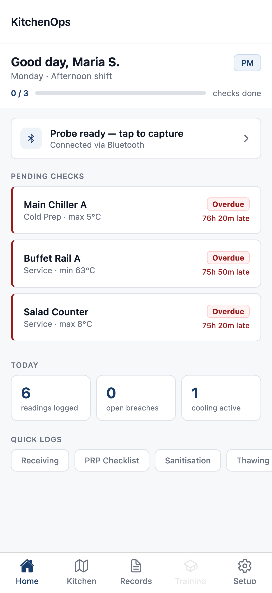
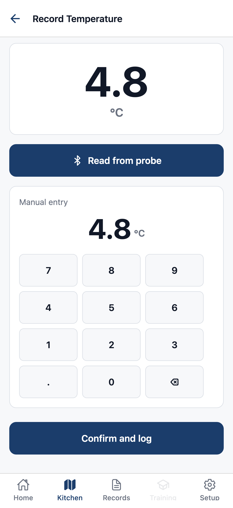
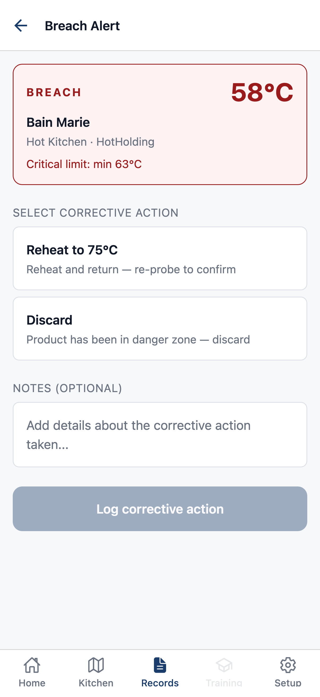
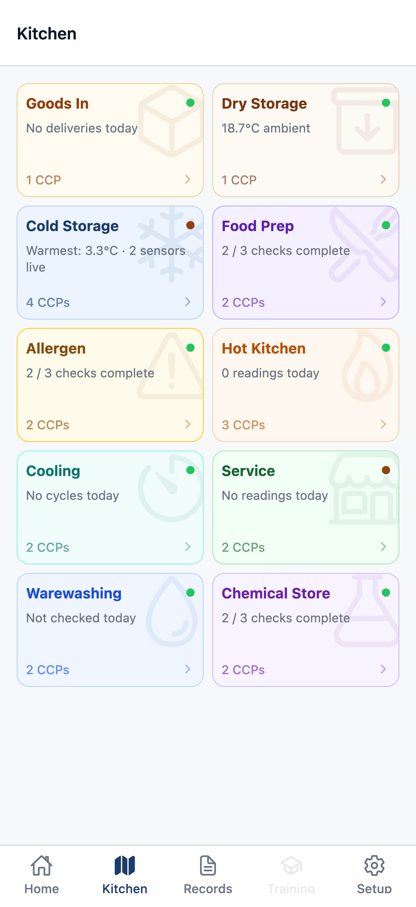
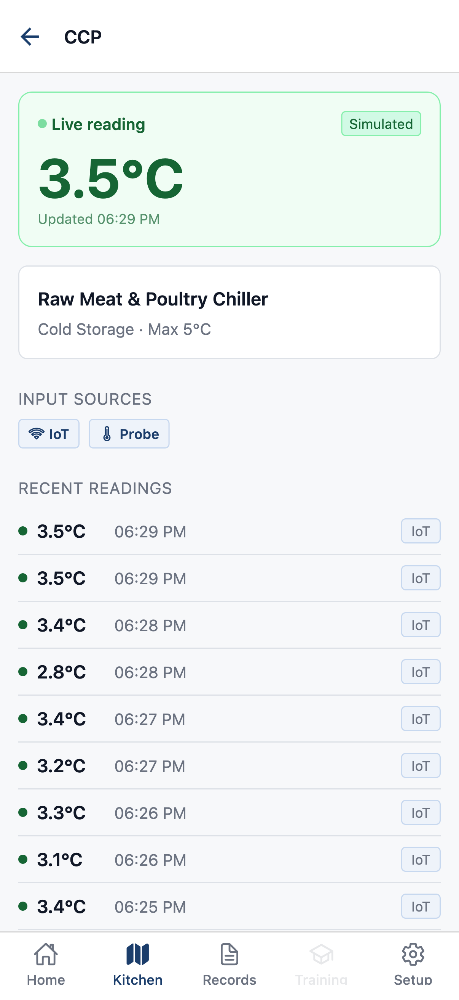
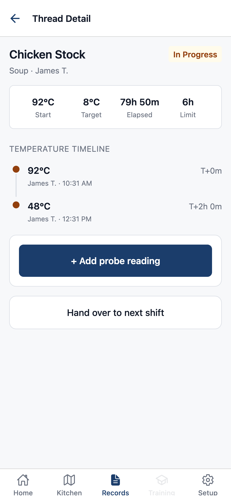
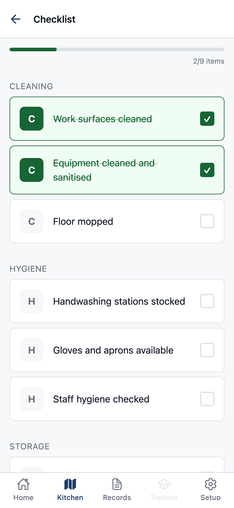
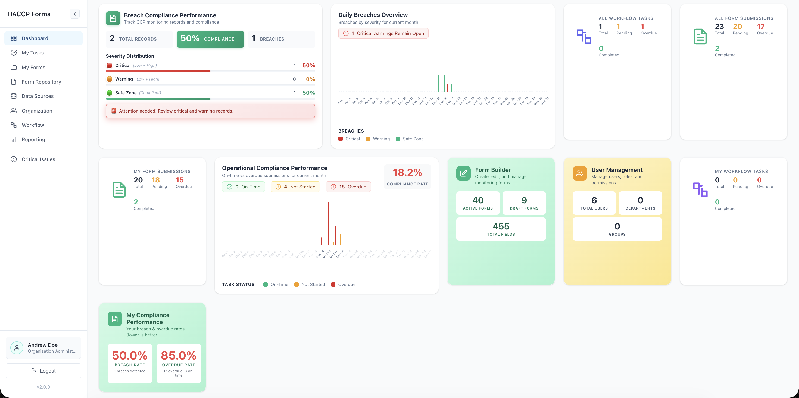

Probe-connected HACCP for live kitchen operations
SafeTrack turns the food safety work already happening in the kitchen into a live, audit-ready record. Probe readings, cold storage signals, service checks, corrective actions, and management visibility all sit in one connected system.
Not a digital clipboard.
A probe-connected monitoring system.
Most HACCP tools simply replace a paper form with a mobile form. The interaction model does not change: staff still stop what they are doing to fill something in. SafeTrack is built on a different belief entirely.
- 1Probe the food
- 2Put down the thermometer
- 3Open the right form
- 4Type the reading and context
- 5Submit before service moves on
- 1Probe the food and SafeTrack detects the reading context
- 2One tap confirms the check and creates the record
The app in action during a real kitchen shift.
SafeTrack gives chefs and stewards the shortest possible path from food safety check to compliant record: live task context, probe-first capture, and guided corrective response when a limit is breached.



Probe-First Capture
The thermometer probe wakes the interaction. The app listens, captures the reading, and asks for only the context needed to create a defensible record.
Cooling Thread Manager
Cooling is treated as a persistent batch thread, not a one-time form. The record spans shift changes automatically from start to safe temperature.
Guided Corrective Response
When a breach is detected, staff get a guided decision tree instead of a blank text field. The corrective record builds from the action they select.
Five stages. Every CCP from delivery to the pass.
SafeTrack covers the full food journey across configured kitchens, outlets, stores, bars, and stewarding zones. Every critical control point is captured, timestamped, and audit-ready.
Coverage areas
Each operating area can be configured individually so staff only see the checks relevant to their section, while management sees the full operation in one dashboard.
Every zone, feed, thread, and checklist visible where work happens.
The live kitchen screens show staff exactly what needs attention now: zone completion, cold storage status, cooling progress, and PRP tasks by shift.




Real-time visibility across kitchen operations. Audit-ready in seconds.
While chefs and stewards capture on mobile, management gets a live web dashboard: compliance status, breach history, overdue work, staff performance, and the full audit trail in one place.
- Live compliance rate updated as checks are completed
- Breach severity breakdown across critical, warning, and safe zones
- Overdue tasks flagged before they become audit risk
- Every CCP record searchable by date, kitchen, section, staff member, or CCP type
- Staff performance showing who logged what, when, and how fast
- Audit trail ready when an auditor asks for evidence

Built around your kitchen, not a generic template.
Each kitchen, outlet, bar, store, and stewarding zone can run its own configured checks while leadership sees the full picture.
Hot holding, cold holding, re-checks, post-service cooling, and handover records stay active throughout service.
Sensor-connected cold storage closes the overnight monitoring gap and opens corrective action as soon as a threshold is breached.
Checklist content can be configured for the food handler's preferred language, with simple visual cues where needed.
See SafeTrack running in your kitchen
A focused demo built around your HACCP plan, kitchen zones, and operating rhythm.
info@neuralnexus.lk · WhatsApp +94 77 788 0390